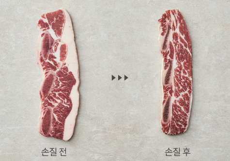

저희는 육가공 업체를 위해 개발된 혁신적인 딥러닝 기반 이미지 분석 솔루션을 제공합니다. 이 프로젝트는 실시간으로 촬영된 고기 이미지를 분석하여, 지방과 살코기의 경계를 정밀하게 표시합니다. 이를 통해 육가공 과정의 자동화 및 최적화를 실현하여, 생산성을 향상시키고 비용을 절감할 수 있습니다.
본 프로젝트에 관심이 있는 업체나 개발자는 GitHub 페이지 또는 이메일을 통해 저희와 연락할 수 있습니다. 프로젝트의 개발에 참여하고자 하는 기술자들은 풀 리퀘스트를 통해 기여할 수 있으며, 육가공 업체들은 이 기술을 시범적으로 도입해볼 수 있습니다.
GitHub: https://github.com/kps123
김성래: kim@email.com
박상인: park@email.com
신인호: shin@email.com